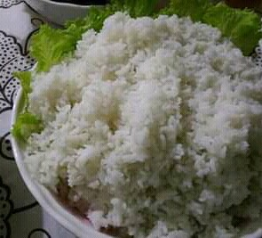

Rice Recipe

Rice is a popular dish all around the world.
It can be sometimes difficult to prepare as it tends to have this sticky texture.
But not to worry with this recipe, you will be able to enjoy it the next time your prepare.
Ingredients
Instructions
- Heat the water until it boils.
- Rinse the rice
- Add one part of rice to two parts of water.
- Cover and let it boil undisturbed
- After the water drains, reduce the heat and let it simmer.
- Fluff out the rice with a folk to see the texture.
- The rice is ready to be served
Serve the rice with any of your favourite topings like Beef stew